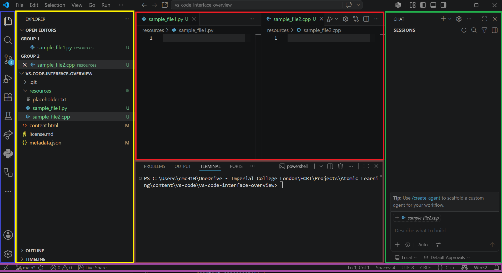

The main sections of the VS Code interface are shown in the image below.

These sections are as follows:
- Activity Bar (blue): This narrow vertical bar on the left contains icons for views such as Explorer, Search, Source Control, and Extensions. Which icons appear here depend on how VS Code has been configured (such as which Extensions are installed). Selecting an icon usually opens its view in the Side Bar.
- Side Bar (yellow): This vertical panel displays the contents of the currently selected Activity Bar view, such as the file explorer, search results, or source control changes.
- Editor Groups (red): This is the main editing area where files are opened. You can split the editor into multiple groups to view and edit files side by side.
- Panel (brown): This horizontal area at the bottom is used for tools such as Terminal, Problems, Output, and Debug Console.
- Copilot Chat (green): This area provides a chat interface for interacting with GitHub Copilot. Depending on layout, it is typically shown in a side panel.
- Status Bar (purple): This horizontal bar at the bottom shows context such as editor or workspace status details.
As you become more familiar with the VS Code interface, you will learn to navigate and utilize these sections effectively.